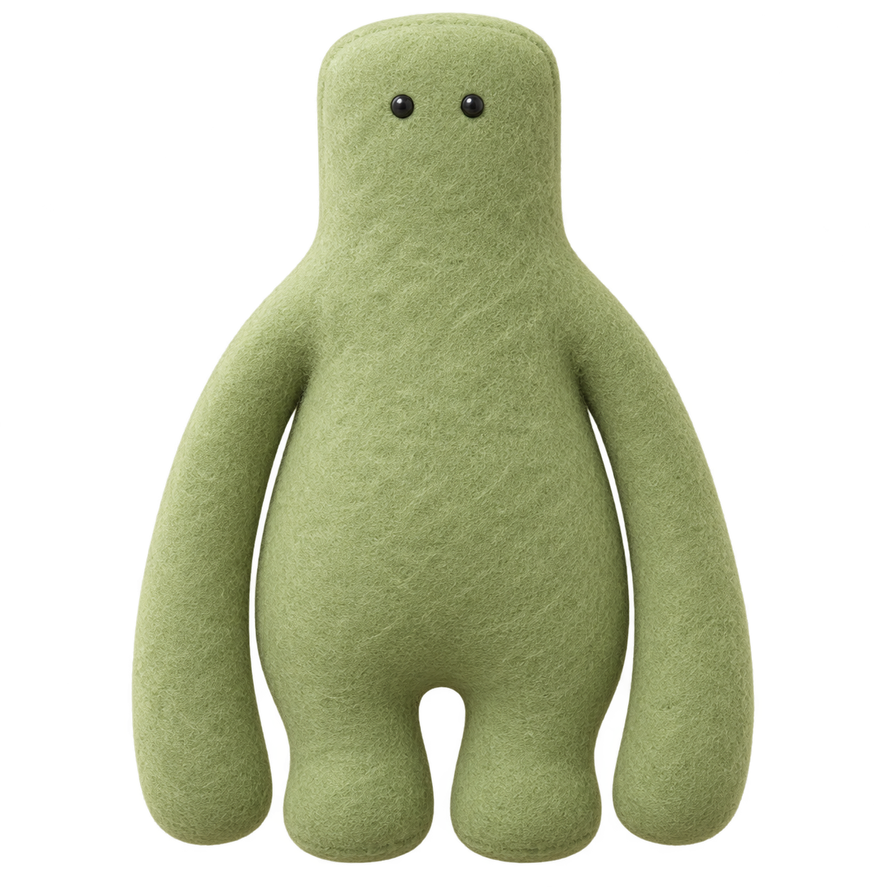
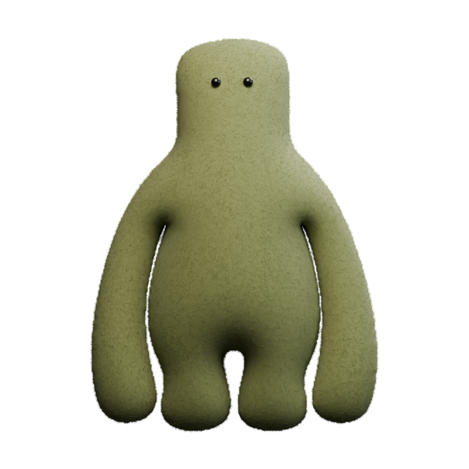
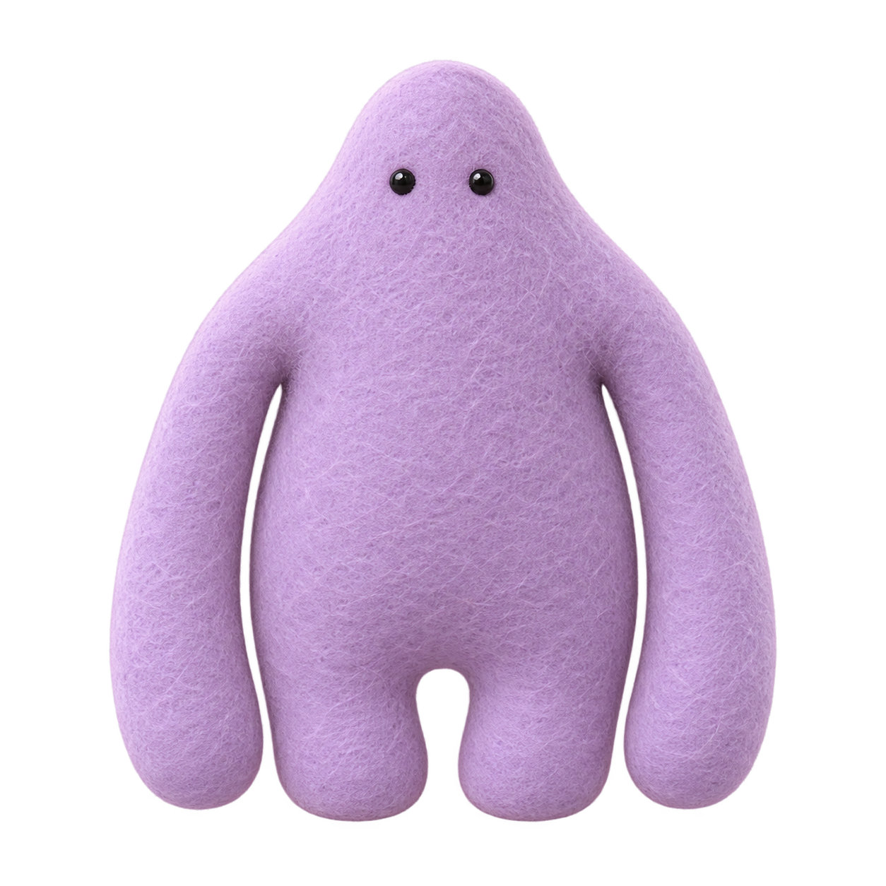
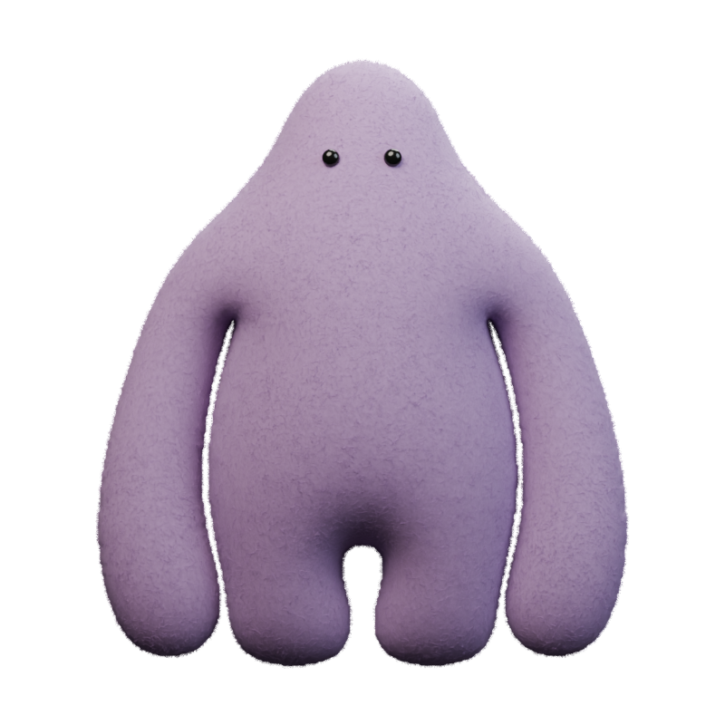
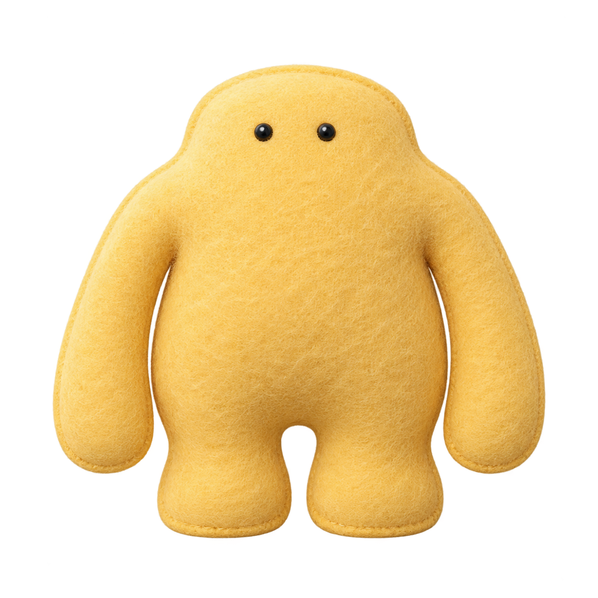
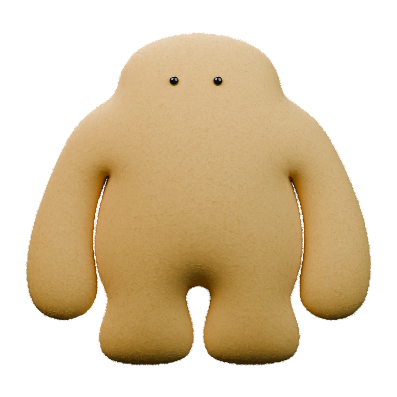
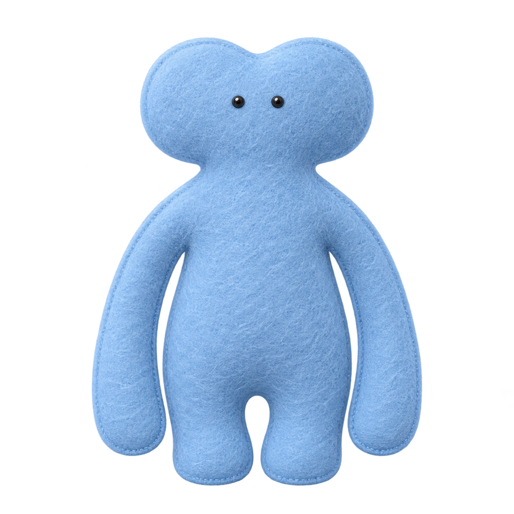
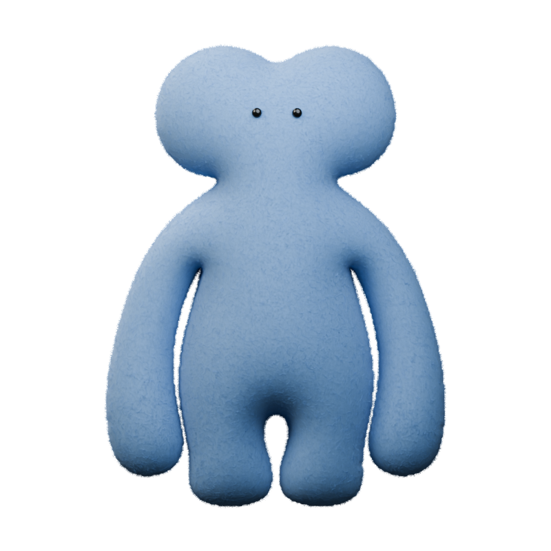

Mimo


Original references beside actual Blender renders. Front outlines and eye locations are measured from the references; rounded depth is inferred. Editable 3D geometry and procedural felt, with no animations.







